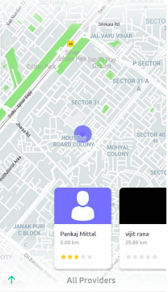

<ion-header>
    <ion-buttons slot="start" class="back-btn">
        <ion-back-button defaultHref="/"></ion-back-button>
      </ion-buttons>
      
  <ion-toolbar>
    <ion-title>select-provider</ion-title>
  </ion-toolbar>
  
</ion-header>

<ion-content >  
  <!-- <ion-button
      expand="block"
      shape="round"
      fill="outline"
      (click)="startBackgroundGeolocation()"
      >Start</ion-button
    > -->
  
  <!-- <div #map id="map"></div>   -->
</ion-content>
